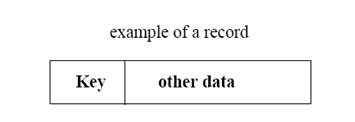
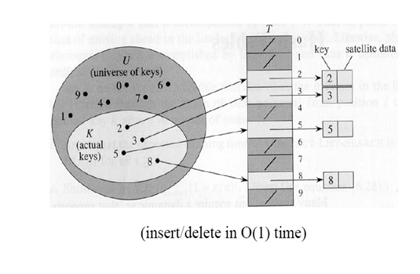
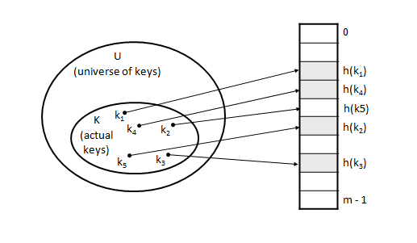
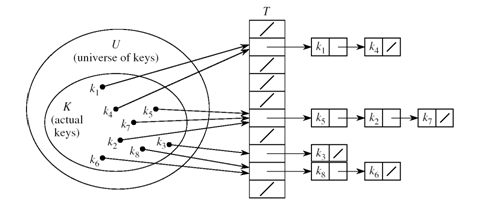
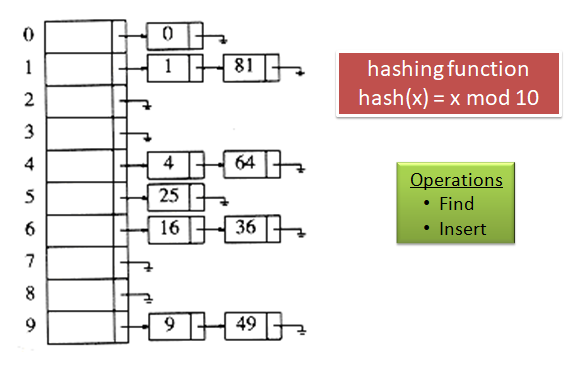
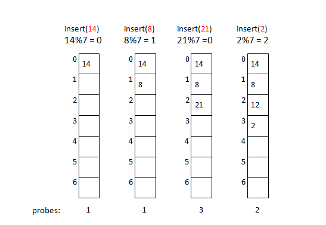
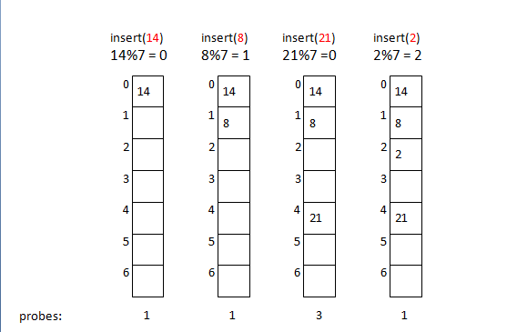
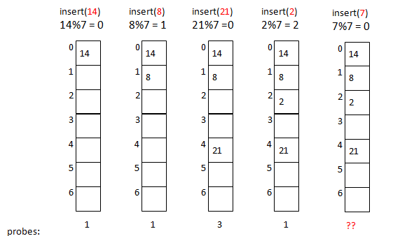
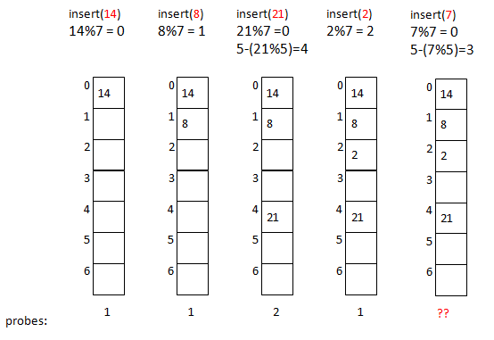

2.5 Hash Tables
2.5.1 The Search Problem
Find items with keys matching a given search key
- Given an array A, containing n keys, and a search key x, find the index i such as x=A[i]
- A key could be part of a large record.

Applications of Search Problem
Keeping track of customer account information at a bank
- Search through records to check balances and perform transactions
Keep track of reservations on flights
- Search to find empty seats, cancel/modify reservations
Search engine
- Looks for all documents containing a given word
Special Case : Dictionary - A data structure that supports mainly two basic operations: insert a new item and return an item with a given key
Queries: return information about the set S:
Search (S, k)
Minimum (S), Maximum (S)
Successor (S, x), Predecessor (S, x)
Modifying operations: change the set
Insert (S, k)
Delete (S, k) – not very often
2.5.2 Direct Addressing
Assumptions:
- Key values are distinct
- Each key is drawn from a universe, U = {0, 1, . . . , m - 1}
Idea:
- Store the items in an array, indexed by keys
Direct-address table representation:
- An array T[0 . . . m - 1]
- Each slot, or position, in T corresponds to a key in U
- For an element x with key k, a pointer to x or x itself will be placed in location T[k]
- If there are no elements with key k in the set, T[k] is empty.

2.5.3 Hashing
- Hashing is the transformation of a string of characters into a usually shorter fixed-length value or key that represents the original string.
- Hashing is used to index and retrieve items in a database because it is faster to find an item using the shorter hashed key than to find it using the original value.
- Hash functions are primarily used in hash tables, to quickly insert, delete and locate a data record given its search key in a constant time.
- Hash tables, are used to implement associative arrays and dynamic sets.
Hash Tables
Idea:
- Use a function h to compute the slot for each key
- Store the element in slot h(k)
A hash function h transforms a key into an index in a hash table T[0…m-1]:
h : U → {0, 1, . . . , m - 1}
We say that k hashes to slot h(k)
Advantages:
- Reduce the range of array indices handled: m instead of |U|
- Storage is also reduced
Example : Hash Tables

Collisions
- Two or more keys hash to the same slot!!
- For a given set K of keys
- If |K| ≤ m, collisions may or may not happen, depending on the hash function
- If |K| > m, collisions will definitely happen (i.e., there must be at least two keys that have the same hash value)
- Avoiding collisions completely is hard, even with a good hash function
Handling Collisions
- Separate Chaining / open hashing
- Open addressing / closed hashing
- Linear probing
- Quadratic probing
- Double hashing
Handling Collisions Using Chaining
Separate Chaining
Idea:
- Put all elements that hash to the same slot into a linked list

- Slot j contains a pointer to the head of the list of all elements that hash to j
- Instead of list, binary search tree or one more hash table also can be used.
Separate Chaining Hash Table - Example

Separate Chaining - Drawbacks
- Need two data structures for implementation - table for index/key values and list for actual values.
- Memory consumed by pointers.
- Search / find takes more time since entire list matching with search key should be traversed.
- As chains get longer, search time increases to O(n) in the worst case.
- Parts of the array might never be used.
- Soln : use the “unused” space in the array instead of using chains to make more space.
Open addressing / closed hashing
- Given an item X, try cells h0(X), h1(X), h2(X), ..., hi(X) where
- hi(X) = (Hash(X) + F(i)) mod TableSize
- Here F is the collision resolution function.
- Some possibilities for F are
- Linear Probing: F(i) = i
- Quadratic Probing: F(i) = i2
- Double Hashing: F(i) = i.Hash2(X)
Linear Probing
Main Idea:
When collision occurs, scan down the array one cell at a time looking for an empty cell
- hi(X) = (Hash(X) + i) mod TableSize (i = 0, 1, 2, ...)
Compute hash value and increment it until a free cell is found
Advantages: - Insertion never fails if the table has at least one free field.
Linear Probing - Examples

Drawbacks of Linear Probing
Works until array is full, but as number of items N approaches TableSize, access time approaches O(N)
Very prone to cluster formation (as in our example)
- If a key hashes anywhere into a cluster, finding a free cell involves going through the entire cluster - and making it grow!
- Primary clustering – clusters grow when keys hash to values close to each other
Can have cases where table is empty except for a few clusters
- Does not satisfy good hash function criterion of distributing keys uniformly
Quadratic Probing
Main Idea:
Spread out the search for an empty slot – Increment by i2 instead of i
hi(X) = (Hash(X) + i2) % TableSize
- h0(X) = Hash(X) % TableSize
- h1(X) = Hash(X) + 1 % TableSize
- h2(X) = Hash(X) + 4 % TableSize
- h3(X) = Hash(X) + 9 % TableSize
Quadratic Probing - Examples

Problem With Quadratic Probing

Double Hashing
Idea:
Spread out the search for an empty slot by using a second hash function
No primary or secondary clustering
- hi(X) = (Hash1(X) + i.Hash2(X)) mod TableSize for i = 0, 1, 2,...
Good choice of Hash2(X) can guarantee "does not get stuck".
For Integer keys: Hash2(X) = R - (X mod R) where R is a prime smaller than TableSize
Double Hashing Example

Double Hashing - Advantages
- Compared to linear probing access becomes efficient at a higher load factor.
- Resolution sequences for different elements are different even if the first hash function hashes the elements to the same field.
- If the hash functions are chosen appropriately, insertion never fails if the table has at least one free field.